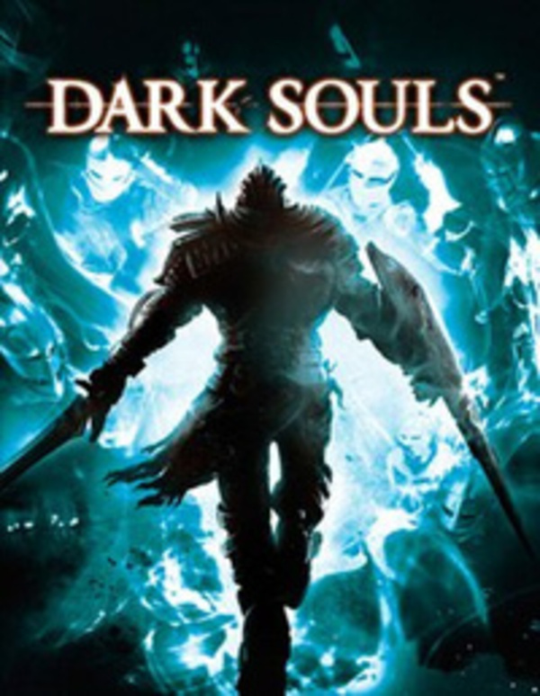
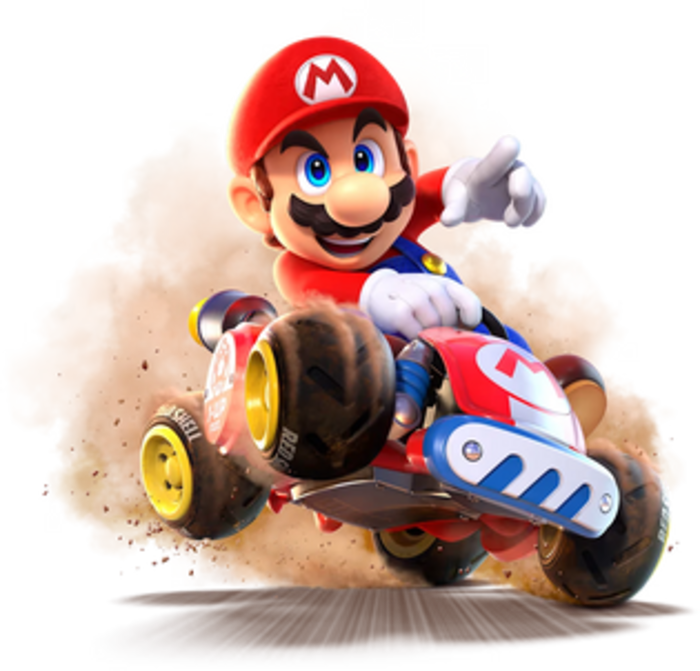
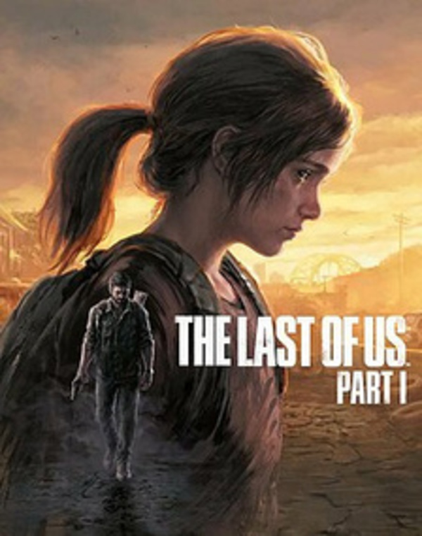
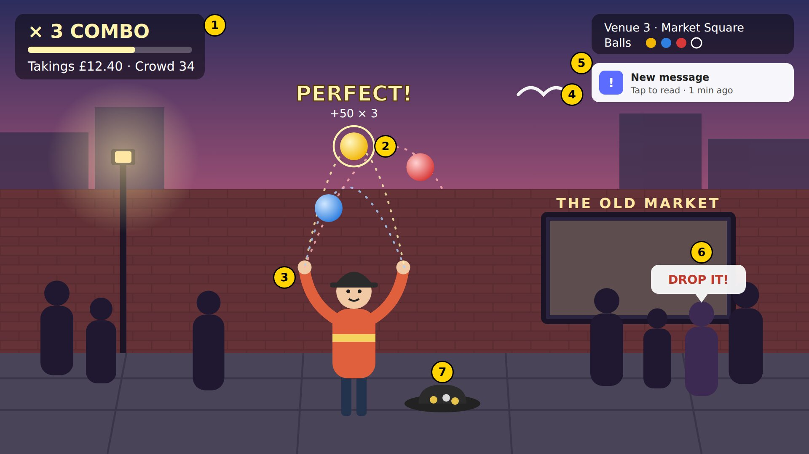

Flow, immersion
& what breaks them
Game mechanics and player engagement
BSc (Hons) Game Design & Development
When did a game last steal an hour from you?
…and what pulled you back out?
By the end of today you can…
Explain flow
using the challenge–skill channel, and name at least four of its conditions.
Distinguish immersion
sensory, challenge-based and imaginative, and the barriers that block each.
Classify distractors
and predict which ones break flow for which player type and genre.
Design a simple test
with a baseline, a manipulation and a self-report measure.
Six stops
Last week, revisited
Player types, SDT, motivation
Mechanics → experience
MDA, Schell's tetrad, core loops
Flow & immersion
The channel, presence, agency, and how they differ
Breaking & protecting it
Distractors, difficulty, skill matching
Juggle Circle, explained
Rules, rounds, and how to measure it
Juggle Circle, played
We run it, record it and analyse it together
Last week,
revisited
Who plays, and why. We need it again today.
You gave us three answers each
The box you ticked before play: Finish, Find, Friends or Fight.
Your biggest column: Tasks, Finds, Trades or Duels.
The rule you liked most, whatever it scored.
For most of you they didn't agree. What you do depends on the rules you're given, the people in the room and the prize, as well as on who you are.
Four types, two axes
Each Week 1 rule was built for one corner.
The types need each other: Killers need people to fight, Socialisers need people to talk to.
useful vocabularypoor measuring instrument
The Hexad: six motivations
| Hexad type | Driven by | SDT need / motivation | Bartle nearest |
|---|---|---|---|
| Achiever | Mastery, getting better | competence | Achiever |
| Player | Rewards, points, prizes | extrinsic | Achiever |
| Free Spirit | Freedom to explore and create | autonomy | Explorer |
| Socialiser | Connection with others | relatedness | Socialiser |
| Disruptor | Change, testing the limits | autonomy, often against others | Killer |
| Philanthropist | Purpose, helping others | purpose | Socialiser |
Marczewski (2015); Tondello et al. (2016). Scored on six scales, so everyone has a profile, not a single box.
Why a rule feels good
Finds: go where you like, in any order.
Tasks and Duels: prove you can do it.
Trades: every point needs another person.
Did the prizes change what you did? Rewards can crowd out intrinsic motivation (the overjustification effect). Today's practical ends with a free-choice minute: who keeps playing when nobody asks them to?
Three lenses, one player
Player types
Who is playing and what they're after.
SDT
Why it's motivating: autonomy, competence, relatedness.
Flow
What it feels like when it's working, moment to moment.
Today's question: does who you are change what breaks your flow?
From mechanics
to experience
Designers build rules. Players feel something.
MDA
Mechanics
Rules, systems and constraints, written in code.
Dynamics
What emerges when players act on those rules, live, at run time.
Aesthetics
The emotional response: tension, delight, fear, flow.
MDA + S: add Story
MDA has no place for story. Schell's tetrad puts Story and Technology alongside Mechanics and Aesthetics, as four elements that support each other.
For Schell it means how the game looks, sounds and feels (the sensory surface). For MDA it means the player's emotional response.
Juggle Circle has almost no story, which is why the practical includes One-Word Story to test imaginative immersion.
One button, three layers
// Mechanic: detect the shoot action IF buttonPress == "shoot" AND ammoCount > 0 THEN isShooting = TRUE ammoCount = ammoCount - 1 ENDIF
Limited ammo, and a counter that goes down.
Players hold fire, count shots and scavenge between fights.
Tension: every miss costs something.
Same framework, three feelings



Most games blend these
Physics
Simulated laws, from realistic to fantastical.
FIFA, Skyrim
Economy
Resources, trade and use; meaningful choices.
Civilization, Minecraft
Progression
Milestones that unlock content and abilities.
Pokémon, WoW
Tactical
Planning, trade-offs, careful decisions.
XCOM, Fire Emblem
Social
Co-op, competition, communication.
Fortnite, Among Us
The thing you do over and over, like jumping in Mario. It keeps players coming back.
Dialogue, trading, crafting. They add depth but can't rescue a weak core.
Intuitive and engaging
- Easy to understand: grasp it without a manual
- Consistent: it works the same way every time
- Feedback: every action answers back, instantly
- Well paced: taught through play, a bit at a time
- Challenging: there's always a next level of skill
- Depth: still interesting after hours
- Variety: new twists keep it fresh
- Rewarding: effort is recognised
Every practical game today takes under two minutes to learn and has no obvious ceiling.
Flow &
immersion
The feeling we're designing for, and how to tell when it's there.
“The state in which people are so involved in an activity that nothing else seems to matter.”Csikszentmihalyi, M. (1990) Flow: The Psychology of Optimal Experience, p. 4
Juggle Circle
- Everyone stands in a circle.
- Say the receiver's name, then throw.
- Once you've thrown, sit down, so everyone can see who is still to receive.
- The last player throws back to the first. That order is now fixed and repeats.
More objects in the air. One odd one out goes round the order backwards. Drop it or throw badly and you sit down.
Challenge and skill rise together
A Learn the rule with one object.
B The ramp adds an object each time you get comfortable.
Keep this up and you reach mastery at 3–4 objects.
C A distractor doesn't change the task. It takes attention away, so your effective skill drops.
How do you know it's flow?
Clear goals
One-sentence rule per game.
watch: players stop asking questionsImmediate feedback
The object is caught or dropped.
watch: self-correctionChallenge–skill balance
Each round adds one new element.
watch: streaks lengthen, then plateauDeep concentration
More objects, faster tempo.
watch: talk stops, gaze locksSense of control
Instant, self-paced restarts.
watch: resets without looking at youLoss of self-consciousness
Until the hecklers arrive.
watch: who plays on, who freezesTime distortion
Estimate the round's length.
watch: estimates short of the clockAutotelic experience
Rewarding in itself.
watch: who keeps playing unaskedClear goals & immediate feedback
Players can't be in flow if they don't know what to do or whether it worked.
- Goals: the next objective is always visible (a marker, a door, a score to beat).
- Feedback: sound, hit-flash, rumble and a number, all within a fraction of a second.
- Celeste respawns you in under a second: failure stays inside the flow.
Immersion deepens as barriers fall
You want to keep playing.
You're emotionally invested; you notice less around you.
You're "in the game". Presence.
Immersion is fragile: one badly placed interruption drops you back a stage.
Three sources of immersion
The audiovisual world overpowers the real one.
Hellblade's binaural voices · Journey
Blind NavigatorRhythm Chain
Motor and mental challenge; closest to flow.
Tetris · Celeste · Beat Saber
Juggle CircleSpeed StackTangram
You care about people and places that don't exist.
The Last of Us · Disco Elysium
One-Word Story
Different sources, different weak points. That's the next section.
Flow vs immersion
| Flow | Immersion | |
|---|---|---|
| What it is | Total absorption in an activity | Being drawn into the game and its world |
| Comes from | Challenge matched to skill | Sensory, challenge-based or imaginative sources |
| Needs | Clear goals, immediate feedback, control | Barriers removed: access, construction, atmosphere |
| At its peak | Agency: effortless control, time flies | Presence: "I was there" |
| Without the other | Tetris, chess, juggling: no world needed | A walking sim: a world, little challenge |
| Measured with | Flow Short Scale; our F1 and F2 | IEQ, GEQ; our F3 |
They share the middle: deep concentration, fading awareness of the room, time distortion. That shared ground is what distractors attack.
Agency & presence
“The satisfying power to take meaningful action and see the results of our decisions and choices.” It builds on flow's sense of control and Week 1's autonomy.
The feeling of being there, forgetting the screen or headset in between. It's where total immersion ends up, and it's strongest in VR.
The assistance distractor attacks agency. Out-of-world interruptions attack presence.
Breaking &
protecting flow
Players will tolerate challenge, but not unfairness or tedium.
If the video won't load: youtube.com/watch?v=rFMCX0NF4wQ
Rayman Legends: Castle Rock
A level synced to music. As you watch, note:
- How does it tell you what to do?
- How does it tell you it worked?
- What would break it?
When did a game break your flow?
Name the moment, then find its category.
Where it comes from × what it competes for
Interruption
"What's 17 × 3?" mid-throw
"What room are we in?"
Stop-and-rate prompt
Sabotage
Shouting the wrong name
Fake navigation instructions
Over-eager hints
hypothesis: hardest to filter out
Noise
Knocking on the table
Phone buzz, lights flicked
Crowding round the player
Clutter
A rogue extra object
A clapper on a different tempo
Other pairs calling in the maze
From the classroom to the screen
| Type | What it attacks | In the practical | In a game |
|---|---|---|---|
| Sensory | Perception, attention capture | Knocking, flicking lights, crowding | Screen shake, audio sting, particle clutter |
| Semantic | Working memory, same-channel meaning | Wrong names, mental arithmetic | A dual task, contradictory UI text |
| Social | Self-consciousness | An audience, a "judge" with a clipboard | Spectators, live chat, a ghost score |
| Interruption | Continuity, time distortion | A forced stop to answer a question | Pop-ups, pause-to-rate prompts, loading |
| Assistance | Autonomy, sense of control | A backseat driver giving hints | Intrusive tutorials, hint arrows, auto-aim |
The audience and the helper
Being watched makes skilled players attend to movements they normally run on autopilot. Novices, who are thinking step by step anyway, often don't suffer.
Social pressure sits across the whole grid: it adds self-consciousness to any distractor.
A hint you didn't ask for takes the solution away from you. Competence and autonomy both drop, even when the hint is right.
In Tangram Race, about one hint in three is deliberately wrong. Do you still follow them?
Think of a game that uses this on purpose. Ghost timers? Kill-cams? Companions?
Gradual difficulty increase
Start simple
Introduce the core controls with room to practise.
Add one thing
Each step builds on the skill you just learned.
Level design
New enemies and obstacles at a manageable pace.
Rewards & feedback
Celebrate progress and show where to improve.
Smooth curve
Rest beats between peaks; no sudden spikes.
Round B adds exactly one new element every 45–60 seconds: an object, a tempo step, a new rule. That is a textbook difficulty ramp.
Skill matching
Dynamic difficulty (DDA)
The game adjusts itself in real time from your performance.
Resident Evil 4 · Left 4 Dead's AI Director
Difficulty levels
Player-chosen, and switchable without penalty.
Easy · Normal · Hard
Assist options
Tune individual dials: speed, invincibility, aim.
Celeste Assist Mode · Hades God Mode
Player profiling
Early levels measure your skill quietly.
tutorial as a test
Adaptive AI & catch-up
Opponents ease off or push back to keep it close.
Mario Kart item odds
Player choice
Optional paths and side content at different difficulties.
branching routes
Worked example:
Juggle Circle
Design it, run it, measure it, predict it.
The rules
- Build the order: everyone stands. Say the receiver's name, then throw, then sit. The last player throws back to the first.
- Everyone stands again. That order is now fixed for every round.
- The ramp: the gamesmaster (GM) feeds in a new object every 45 s, up to four.
- Object 3 is the odd one out (a soft toy, say): it runs the order in reverse.
- Round C: hecklers (H) shout wrong names; a rogue thrower (R) lobs in a spare object. They stay 1 m outside.
Roles, faults and pauses
- You don't catch an object thrown to you
- You make a bad throw (the GM decides)
Throwers skip seated players: throw to the person they would have thrown to. The GM puts the object back in play.
The round ends when one player is left standing, or when time is up.
Gamesmaster (GM) · 1
Watches the on-screen clock, feeds in objects on cue, judges catches and bad throws, ends the round.
Recorder (REC) · 1
Notes the time each player sits down, and when the round ends.
Distractors · 3, Round C only
Two hecklers and a rogue thrower, working from the script card.
Between rounds: a 60-second pause to fill in page 2 of the sheet. Everyone stands again, including anyone who was out.
Practice, three rounds, a free minute
Practice first
Nobody sits down. Lock in the order and learn what counts as a bad throw.
Distractors follow a script
So Round C is the same for every group.
Ground rules
No contact. Heckle the play, never the person. Anyone can call "pause".
A juggling game is a game
Object count, a fixed order, a reverse object, sitting out.
Tracking several objects at once; the group finds a shared rhythm.
Team flow, rising tension, then laughter at the drop.
Tracking multiple objects is the core skill of action games. Adding an object is the simplest possible difficulty dial.
Hecklers shout nonsense sounds instead of names. Now you can separate sensory from semantic distraction.
Measuring a feeling
| # | Item | Answer |
|---|---|---|
| F1 | The challenge matched my skill. | 1–7 |
| F2 | I lost track of time. | 1–7 |
| F3 | I was aware of what was going on around me. (reversed) | 1–7 |
| T | Without checking, how long did that round last? | m:ss |
| P | How long I stayed in (the recorder tells you) | m:ss |
| N | One word for how that felt | free text |
A teaching shortcut, not a validated instrument. For real studies: Flow Short Scale, IEQ, GEQ.
Let's score a card together
Flow index (1–7)
Time distortion (estimate ÷ actual)
Distraction cost: flow −59% ((5.7 − 2.3) ÷ 5.7) · time in −47% (180 s → 95 s) · and Round C felt longer than it was.
Swap the order for half the groups
The distractors did it.
Fatigue or boredom is a rival explanation.
This is counterbalancing: a within-subjects design with a baseline (B), a manipulation (C) and a self-report measure (the card).
Record → process → analyse
- Every player: one card per round, 60 s.
- Recorder: when each player sat down, and when the round ended.
- GM: group number and order (ABC or ACB).
- Type one row per player per round into the class spreadsheet.
- The sheet works out flow index and time distortion for each row.
- It averages each round, then the distraction cost: (B − C) ÷ B.
- Did flow drop from B to C?
- Was it the distractors? Compare odd vs even groups.
- Did time fly in B and drag in C?
- Was your player-type prediction right?
Group, Order, Player, Player type, Round, F1, F2, F3, T estimate (s), Time in (s), One word 1, ABC, P01, Achiever, A, 5, 3, 4, 95, , calm 1, ABC, P01, Achiever, B, 6, 5, 2, 140, , buzzing 1, ABC, P01, Achiever, C, 3, 2, 6, 210, 95, frazzled
Write your prediction before you play
| Hexad type | A hypothesis to test today |
|---|---|
| Achiever | Tolerates heckling best when a score is visible; biggest flow drop in the no-score story game. |
| Player | Highest flow in Speed Stack; plays on in the free minute only if there's a leaderboard. |
| Free Spirit | Highest flow in One-Word Story and Round A; most hurt by the backseat driver. |
| Socialiser | Enjoys Round C more, despite performing worse. |
| Disruptor | Volunteers to distract; performs better under provocation than in silence. |
| Philanthropist | Best guide in Blind Navigator; hurt most by failing the team. |
Predictions to test, not established findings. Log your type in the player_type column.
Five things to remember
Mechanics make dynamics make aesthetics. Design backwards from the feeling you want.
Flow is challenge matched to skill, with clear goals and immediate feedback.
Immersion comes from three sources (sensory, challenge, imaginative), each with its own weak points.
A distractor lowers effective skill. The most meaningful ones, inside the play, hurt most.
You can measure it: baseline, manipulation, self-report, and a swapped order.
Juggle Circle:
play it
Keep this on screen while we play. The clock runs the rounds.
Get into groups
- 6–8 players, about 2 m apart
- 1 gamesmaster (GM): objects, bad throws, the clock
- 1 recorder (REC): who sat down, and when
- 3 distractors: 2 hecklers and 1 rogue thrower
5 soft objects to throw (beanbags, soft balls, rolled socks); one should look different. One activity sheet and a pen each.
Odd groups play B then C. Even groups play C then B.
Distractors: come to the front for your script card. Don't tell your group what's on it.
Build your order
- Everyone stands. The GM gives one object to a starting player.
- Say the name of someone still standing, throw to them, then sit down.
- When everyone is sitting, the last player throws back to the starter.
- Stand up and run it once more. Remember who you throw to.
Practice round: learn the fault rule
T start/pause · R reset
One object · nobody sits down yet
- 0:00GM starts one object
- 0:20GM points out one bad throw: that player would sit, and be skipped
- 0:40Speed up: throw as soon as you catch
- 1:00Stop. No card for practice.
don't catch an object thrown to you, or make a bad throw (the GM decides). Throwers skip you. The round ends when one player is left, or time is up.
“Get comfortable. Nobody will bother you.”
T start/pause · R reset
Everyone
- 0:00GM starts one object. Faults count from now.
- 1:00Halfway
- 2:00Stop. Cards out.
Fill in page 2 of your sheet, on your own
| F1–F3 | Circle 1–7. F3 is about the room around you. |
| T | How long was that round? Don't check a clock. |
| P | The recorder tells you when you sat down, or "end". |
| N | One word for how it felt. |
Anyone who was out comes back in. Same order, same starting player.
Same ramp for everyone; distractors only in Round C
T start/pause · R reset
Everyone · the ramp
- 0:00GM starts one object
- 0:45GM adds object 2
- 1:30GM adds object 3, the odd one: reverse order
- 2:15GM adds object 4
- 3:00Stop. Cards out.
Round C groups only · distractors
- 0:20Heckler A: wrong names
- 0:45Heckler B joins in
- 1:30Rogue thrower lobs in a spare object
- 2:15GM asks one player: “What’s 17 × 3?”
- 2:45All distractors stop: who recovers?
Fill in page 2 of your sheet, on your own
| F1–F3 | Circle 1–7. F3 is about the room around you. |
| T | How long was that round? Don't check a clock. |
| P | The recorder tells you when you sat down, or "end". |
| N | One word for how it felt. |
Anyone who was out comes back in. Same order, same starting player.
Same ramp for everyone; distractors only in Round C
T start/pause · R reset
Everyone · the ramp
- 0:00GM starts one object
- 0:45GM adds object 2
- 1:30GM adds object 3, the odd one: reverse order
- 2:15GM adds object 4
- 3:00Stop. Cards out.
Round C groups only · distractors
- 0:20Heckler A: wrong names
- 0:45Heckler B joins in
- 1:30Rogue thrower lobs in a spare object
- 2:15GM asks one player: “What’s 17 × 3?”
- 2:45All distractors stop: who recovers?
Fill in page 2 of your sheet, on your own
| F1–F3 | Circle 1–7. F3 is about the room around you. |
| T | How long was that round? Don't check a clock. |
| P | The recorder tells you when you sat down, or "end". |
| N | One word for how it felt. |
Anyone who was out comes back in. Same order, same starting player.
That's it.
Well played.
Stop, you're done.
Put your sheets into the class spreadsheet
One row per player per round: three rows each.
Group, Order, Player, Player type, Round, F1, F2, F3, T estimate (s), Time in (s), One word 2, ACB, P09, Free Spirit, A, 4, 4, 3, 100, , easy 2, ACB, P09, Free Spirit, C, 2, 3, 6, 200, 70, chaos 2, ACB, P09, Free Spirit, B, 6, 6, 2, 120, , flowing
Players tab. Round letters, not numbers: even groups played C second. Times in seconds (2:30 = 150). Leave Time in blank if you were still standing.
[link or QR code]
The sheet works out flow index, time distortion, the B-vs-C cost by order, and a player-type table.
What did we find?
Mean flow in B vs C. How big was the drop?
Did C fall for odd groups (C last) and even groups (C second)?
Did B feel shorter than it was, and C longer?
- Which distractor cost most: the wrong names or the rogue object?
- Was anyone better in Round C? Why?
- Find someone with high flow who sat down early.
- Did being out change how the round felt?
- Check your player-type prediction.
- Who kept playing when we said stop?
“To protect flow in a genre game, never ….”
One sentence per group. We'll collect them as the class's design rules for protecting flow.

Busker
A one-button juggling game where every difficulty setting and distractor is a switch you can flip and log.
- 1Combo, takings, crowd: the achievement layer
- 2Apex ring: immediate feedback
- 4Seagull: diegetic, sensory
- 5"New message": non-diegetic interruption
- 6Heckler: social and semantic
Bartle, R. (1996) 'Hearts, clubs, diamonds, spades: players who suit MUDs', Journal of MUD Research, 1(1).
Beilock, S. L. and Carr, T. H. (2001) 'On the fragility of skilled performance: what governs choking under pressure?', Journal of Experimental Psychology: General, 130(4), pp. 701–725.
Brown, E. and Cairns, P. (2004) 'A grounded investigation of game immersion', CHI '04 Extended Abstracts, pp. 1297–1300.
Csikszentmihalyi, M. (1990) Flow: The Psychology of Optimal Experience. New York: Harper & Row.
Deci, E. L. (1971) 'Effects of externally mediated rewards on intrinsic motivation', Journal of Personality and Social Psychology, 18(1), pp. 105–115.
Ermi, L. and Mäyrä, F. (2005) 'Fundamental components of the gameplay experience: analysing immersion', Proceedings of DiGRA 2005.
Hunicke, R., LeBlanc, M. and Zubek, R. (2004) 'MDA: a formal approach to game design and game research', AAAI Workshop on Challenges in Game AI.
IJsselsteijn, W. A., de Kort, Y. A. W. and Poels, K. (2013) The Game Experience Questionnaire. Eindhoven: Technische Universiteit Eindhoven.
Jennett, C. et al. (2008) 'Measuring and defining the experience of immersion in games', International Journal of Human-Computer Studies, 66(9), pp. 641–661.
Lombard, M. and Ditton, T. (1997) 'At the heart of it all: the concept of presence', Journal of Computer-Mediated Communication, 3(2).
Marczewski, A. (2015) Even Ninja Monkeys Like to Play: Gamification, Game Thinking and Motivational Design.
Murray, J. H. (1997) Hamlet on the Holodeck: The Future of Narrative in Cyberspace. New York: Free Press.
Rheinberg, F., Vollmeyer, R. and Engeser, S. (2003) 'Die Erfassung des Flow-Erlebens', in Diagnostik von Motivation und Selbstkonzept. Göttingen: Hogrefe, pp. 261–279.
Ryan, R. M. and Deci, E. L. (2000) 'Self-determination theory and the facilitation of intrinsic motivation, social development, and well-being', American Psychologist, 55(1), pp. 68–78.
Schell, J. (2008) The Art of Game Design: A Book of Lenses. Burlington, MA: Morgan Kaufmann.
Sweetser, P. and Wyeth, P. (2005) 'GameFlow: a model for evaluating player enjoyment in games', Computers in Entertainment, 3(3).
Tondello, G. F. et al. (2016) 'The gamification user types Hexad scale', Proceedings of CHI PLAY '16, pp. 229–243.